- We refer to Knowledge Base as KB
- Select Knowledge Base Category from Technical Contents top menu. Manage Knowledge Base Categories window will open with existing Knowledge Base Categories list if any.
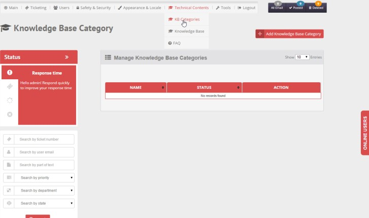
- To Add new knowledge- base category click Add Knowledge Base Category , button, a new window will openSet KB Category name [should be unique], then click Add
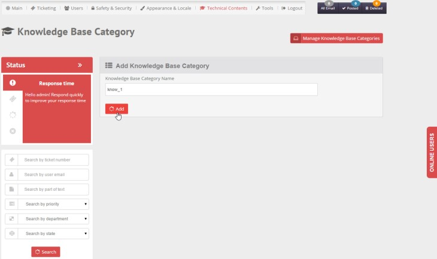
- To Delete KB Category (only if has no associated KB at all), click Delete icon
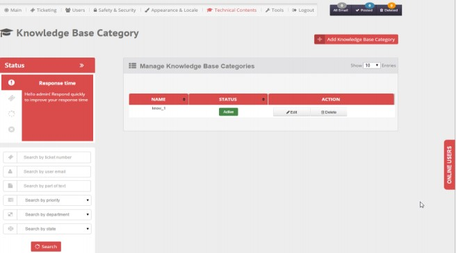
- To Edit KB Category, click Edit icon, enter new entry [should be unique], then click Update button
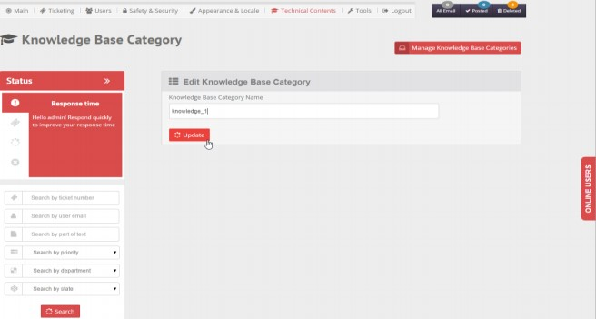
- You can activate/deactivate a KB category any time by clicking Active-Inactive button. When a KB category is active it will appear in product list and be available to select; on the other hand when a KB category is inactive it will not be listed, and thus could not be selected.
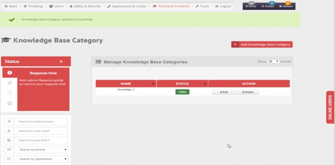
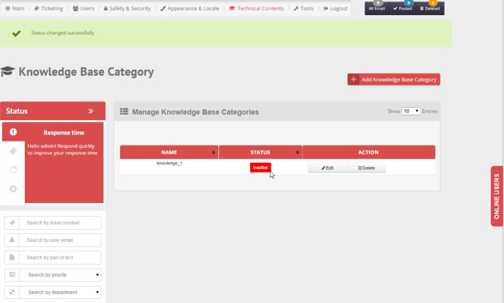
- Ability to search in Knowledge base
- Search by Topic
- Filter by Products
- Filter by Companies
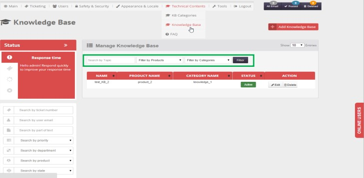
- To add KB-topic select Knowledge Base from Main top meny. Add Knowledge Base form will open. Select Category and Product from drop-down list, set topic and content [combination of Category, Product, topic and content should be unique] then click Add button.
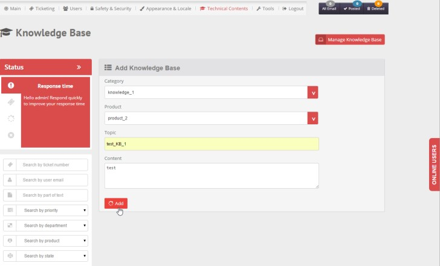
- To Delete KB-topic, click Delete icon.
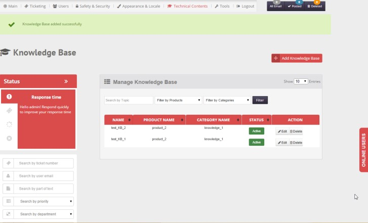
- To Edit KB-topic, click edit icon, update data as required then click Update button. Duplicate Entry not
possible(category, product and topic combination should be unique).
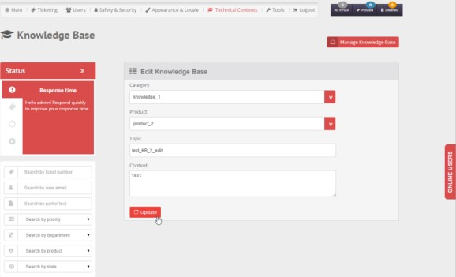
- You can activate/deactivate a KB-topic any time by clicking Active-Inactive button. When a KB-topic is active it will appear in companies list and be available to select; on the other hand when a KB-topic is inactive it will not be listed, and thus could not be selected.
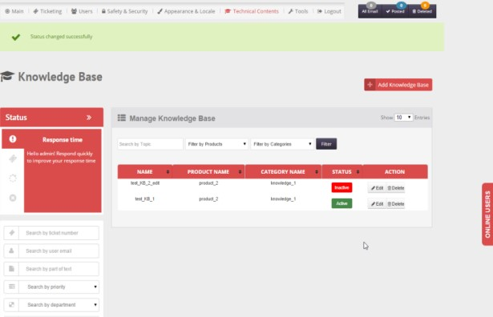
Created with the Personal Edition of HelpNDoc: Full-featured EPub generator